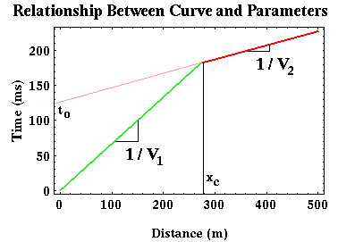
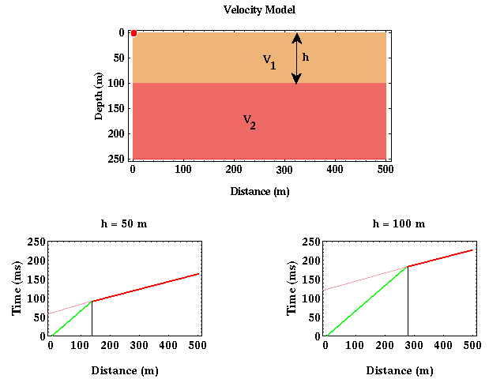
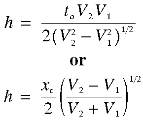

Determining Earth Structure From Travel-Times: Example
Now, what can be determined about the structure responsible for producing a first arrival travel-time curve from the travel-time curve itself? With some assumptions, quite a bit. If we assume that the structure responsible for producing the travel-time curve shown below consisted of a single layer over a halfspace and that the boundary separating the layer from the halfspace is horizontal, then we can determine the velocity of the layer and halfspace and the thickness of the layer.

Let's concentrate on that portion of the travel-time curve associated with the direct arrival (green) first. From the wavefield snapshots and movies, as recorded at the Earth's surface, this arrival is one that has propagated horizontally from the source across the surface of the earth at the seismic wave speed associated with the upper layer. Thus, if we knew what the speed of wave propagation was in the layer, we could predict the arrival time of the direct wave by simply dividing the offset of the receiver from the source by the speed. Conversely, given the time of arrival at any offset, the speed can be computed by dividing the offset by the arrival time. Returning to the former description, a better way (better in the sense that it will be more robust to noise) of computing the speed from the arrival times is to realize that the slope of the line describing the arrival times of the direct wave is simply equal to the reciprocal of the speed of the wave in the layer.
Similarly, the slope of the line describing the arrival times of the refracted wave is simply equal to the reciprocal of the speed of the wave in the halfspace. This is because the halfspace interface is horizontal and the head wave appears to travel along this interface at the velocity of the halfspace. Thus, from the slopes of the two line segments describing the travel-time curve, we can compute the two velocities of the media involved.
We can also compute the thickness of the layer. To get a qualitative feeling for how this can be done, consider two models with identical wave speeds but one has a 50 meter thick layer and the other a 100 meter thick layer. How would you expect the travel-time curves for these two models to differ? Would the slopes of the line segments describing the direct and refracted arrivals differ? No, these attributes of the travel-time curve are controlled by the velocities alone. For the model consisting of a thick, 100 meter layer, would you expect to see the head wave at longer or shorter offsets than for the model consisting of a thin, 50 meter layer?

As is shown above, I would expect the head wave off of a thicker layer to be initially observed as a first arrival at longer offsets than would be observed for a head wave generated off of a thinner layer. Why?
Remember that the head wave has to travel down to the boundary separating the layer from the halfspace and back up. These segments of the raypath are completed at the velocity of the layer. The head wave can be observed as a first arrival, because that portion of the raypath traveling along the boundary does so at the speed of the halfspace, which is faster in this example. But this only happens at long enough offsets where the speed differences makes up for the longer path length. Thus, although the head wave travels a greater distance than the direct arrival before it is recorded, it can arrive before the direct arrival because it travels faster along a portion of its raypath. The thicker the layer, more of the head wave's raypath travels at the slower velocity and the farther you have to go in offset to account for this with a portion of the raypath that propagates faster along the interface. You can see that this is exactly what is being shown in the two travel-time curves plotted above.

Either one of two parameters is usually used to quantify this offset dependence in where the head wave
becomes
the first arrival.
The first of these is referred to as the cross-over distance, xc (where the black line
intersects the distance axis) in the plots above.
The cross-over distance simply refers to the offset at which the head wave becomes the first arrival.
The second commonly used parameter is called the zero-offset time, t0,
(where the pink line intersects the time axis) in the plots above.
The zero-offset time is nothing more than the time at which the refracted arrival would be observed at a
distance
of zero meters from the source*.
In principle, either of these parameters could be used, but in practice, the zero-offset time is more
commonly used because it is easier to estimate with noisy data.
Thus in principle, by measuring xc or t0, we can compute the thickness of the layer, h.
*Please note that the refracted arrival does not actually exist at zero offset. Instead what is done is to extrapolate the straight line describing the head wave back to zero offset. This is shown as the pink line in the figures above.
Seismology
- Simple Earth Model: Low-Velocity Layer Over a Halfspacepg 11
- Head Wavespg 12
- Records of Ground Motionpg 13
- Travel-time Curves for a Simple Earth Modelpg 14
- First Arrivalspg 15
- Determining Earth Structure from Travel Timespg 16
- Derivation of Travel Time Equationspg 17
- High-Velocity Layer Over a Halfspace: Reprisepg 18
- Picking Times of Arrivalspg 25
- Wave Propagation with Multiple Horizontal Layerspg 26
- Travel Time Curves from Multiple Horizontalpg 27
- Hidden Layerspg 28
- Head Waves from a Dipping Layer: Shooting Down Dippg 29
- Head Waves from a Dipping Layer: Shooting Up Dippg 30
- A Field Procedure for Recognizing Dipping Bedspg 31
- Estimating Dips and Depths from Travelpg 32